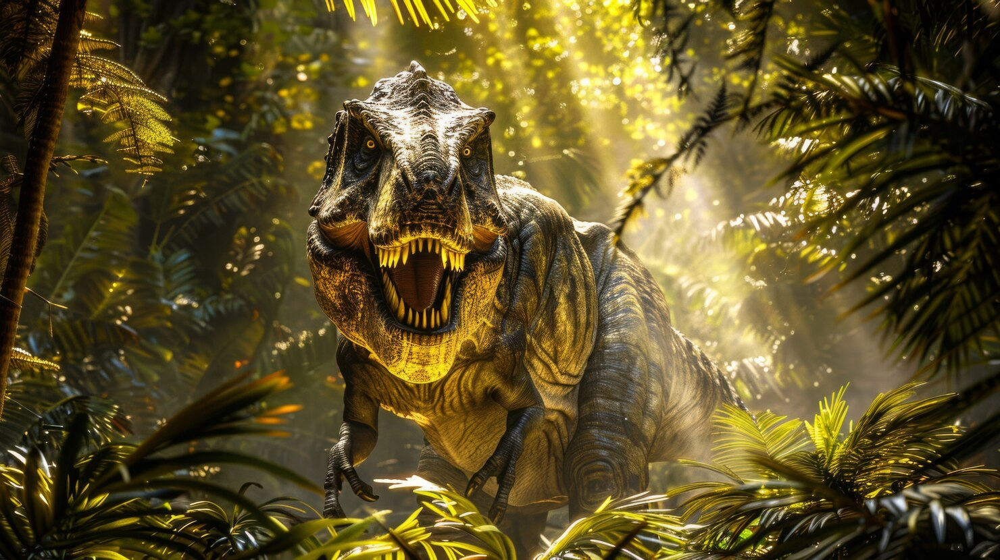
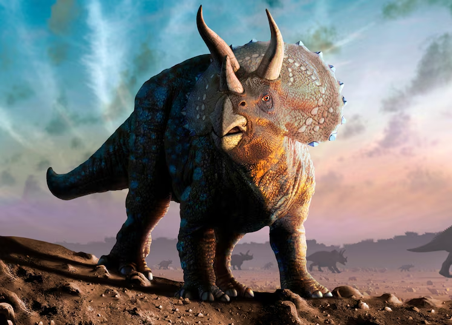
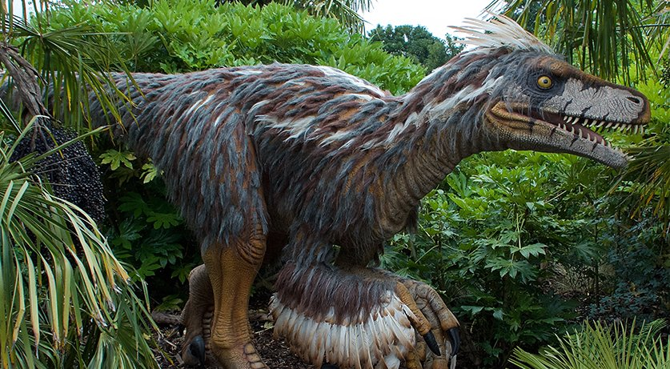
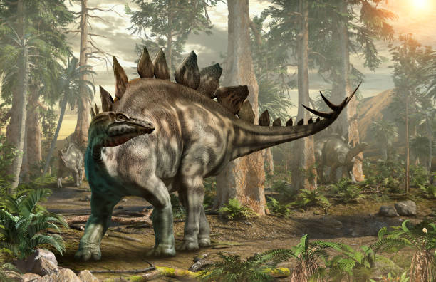
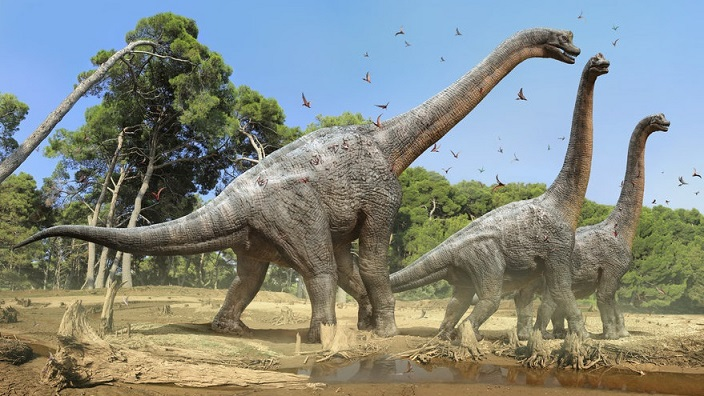

Os dinossauros são um grupo de répteis que dominaram o planeta Terra durante a era mesozóica, cerca de 230 milhões a 65 milhões de anos atrás. O nome "dinossauro" vem do grego e significa "lagarto terrível", uma referência ao seu tamanho e poder.
Fatos Interessantes sobre Dinossauros
Era Mesozoica: Os dinossauros viveram durante o Triássico, Jurássico e Cretáceo.
Diversidade: Havia dinossauros carnívoros e herbívoros, com tamanhos que variavam desde os pequenos, do tamanho de um frango, até gigantes como o Argentinosaurus.
Extinção: Os dinossauros foram extintos em grande parte por um evento de extinção em massa, provavelmente causado por um impacto de asteroide.
Alguns Dinossauros Famosos
Tyrannosaurus Rex

O Tyrannosaurus rex, ou T. rex, foi um dos maiores carnívoros terrestres de todos os tempos. Ele viveu no final do Cretáceo e tinha uma impressionante mandíbula cheia de dentes afiados, capazes de esmagar ossos. Embora fosse extremamente forte, o T. rex tinha braços curtos e era provavelmente um caçador solitário.
Triceratops

O Triceratops era um dinossauro herbívoro, famoso por seus três chifres e um grande colar ósseo que o protegia de predadores. Ele viveu no final do Cretáceo e se alimentava principalmente de plantas. O Triceratops era um dos dinossauros mais reconhecíveis devido à sua aparência distinta.
Velociraptor

O Velociraptor era um dinossauro carnívoro pequeno, mas muito ágil. Ele se destaca por sua inteligência e pelo fato de, provavelmente, caçar em grupos. Sua velocidade e habilidades de caçar em equipe o tornaram um predador eficaz. Ele viveu no final do período Cretáceo.
Stegosaurus

O Stegosaurus é famoso por suas grandes placas ósseas nas costas e espinhos na cauda. Ele era um herbívoro, alimentando-se de plantas. Seu cérebro era pequeno em comparação com o tamanho de seu corpo, o que leva os cientistas a acreditar que sua inteligência era limitada. O Stegosaurus viveu no período Jurássico.
Braquiossauro

O Braquiossauro (Brachiosaurus) foi um enorme dinossauro herbívoro que viveu no período Jurássico Superior, há cerca de 154 milhões de anos. Ele se destacava por sua postura única, com as pernas dianteiras mais longas que as traseiras, o que lhe dava um pescoço alto e o permitia alcançar vegetação em grandes alturas. Com até 25 metros de comprimento e 50 toneladas, era um dos maiores dinossauros conhecidos. Seu habitat era principalmente florestas próximas a rios e lagos na América do Norte e na África.